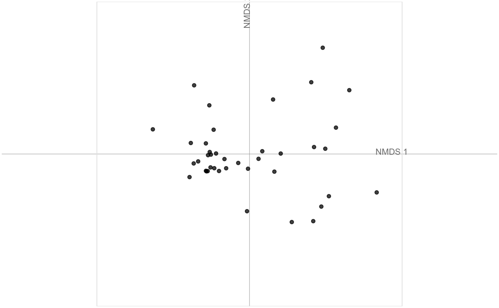
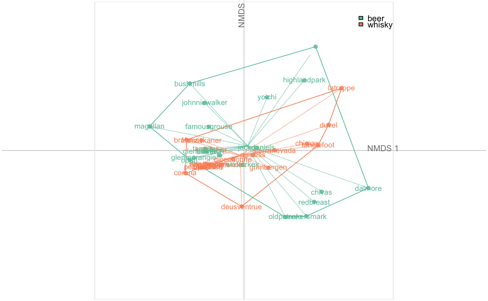
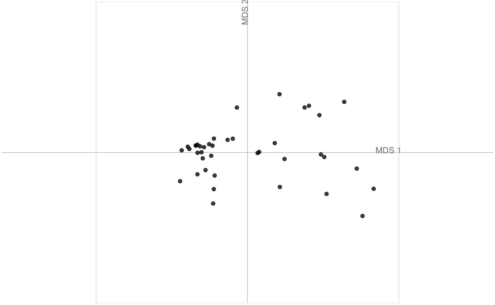
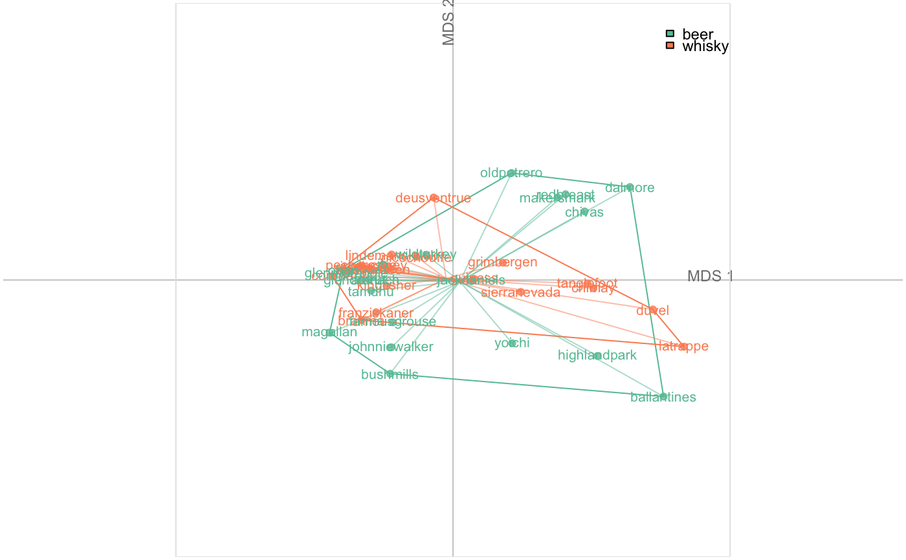

plot_NMDS(x, f = NULL, axes = c(1, 2), points = TRUE, points_transp = 1/4, chull = TRUE, chullfilled = FALSE, labelgroups = FALSE, legend = TRUE, title = "", box = TRUE, axesnames = TRUE, palette = pal_qual) plot_MDS(x, f = NULL, axes = c(1, 2), points = TRUE, points_transp = 1/4, chull = TRUE, chullfilled = FALSE, labelgroups = FALSE, legend = TRUE, title = "", box = TRUE, axesnames = TRUE, palette = pal_qual)
| x | |
|---|---|
| f | factor specification to feed fac_dispatcher |
| axes |
|
| points |
|
| points_transp |
|
| chull |
|
| chullfilled |
|
| labelgroups |
|
| legend |
|
| title |
|
| box |
|
| axesnames |
|
| palette |
|
### First prepare an NMDS object x <- bot %>% efourier %>% NMDS#>#>#>#> Warning: results may be meaningless because data have negative entries in method “bray”#> Run 0 stress 0.07227125 #> Run 1 stress 0.07227126 #> ... Procrustes: rmse 9.86259e-06 max resid 2.138246e-05 #> ... Similar to previous best #> Run 2 stress 0.07227125 #> ... Procrustes: rmse 5.606532e-06 max resid 2.141605e-05 #> ... Similar to previous best #> Run 3 stress 0.07227127 #> ... Procrustes: rmse 3.371012e-05 max resid 0.0001371314 #> ... Similar to previous best #> Run 4 stress 0.1476563 #> Run 5 stress 0.07227125 #> ... Procrustes: rmse 2.325105e-06 max resid 7.83702e-06 #> ... Similar to previous best #> Run 6 stress 0.07227125 #> ... Procrustes: rmse 7.428249e-06 max resid 2.630202e-05 #> ... Similar to previous best #> Run 7 stress 0.07227127 #> ... Procrustes: rmse 1.100152e-05 max resid 4.944553e-05 #> ... Similar to previous best #> Run 8 stress 0.07227128 #> ... Procrustes: rmse 3.314176e-05 max resid 0.0001379795 #> ... Similar to previous best #> Run 9 stress 0.07227128 #> ... Procrustes: rmse 3.620206e-05 max resid 0.0001523612 #> ... Similar to previous best #> Run 10 stress 0.146277 #> Run 11 stress 0.07227127 #> ... Procrustes: rmse 1.575428e-05 max resid 5.33223e-05 #> ... Similar to previous best #> Run 12 stress 0.1629845 #> Run 13 stress 0.0722713 #> ... Procrustes: rmse 3.516792e-05 max resid 0.0001306068 #> ... Similar to previous best #> Run 14 stress 0.07227127 #> ... Procrustes: rmse 1.620834e-05 max resid 5.386396e-05 #> ... Similar to previous best #> Run 15 stress 0.07227125 #> ... Procrustes: rmse 9.064569e-06 max resid 3.247021e-05 #> ... Similar to previous best #> Run 16 stress 0.07227129 #> ... Procrustes: rmse 4.424743e-05 max resid 0.0001762434 #> ... Similar to previous best #> Run 17 stress 0.07227126 #> ... Procrustes: rmse 1.53515e-05 max resid 6.062682e-05 #> ... Similar to previous best #> Run 18 stress 0.07227125 #> ... Procrustes: rmse 8.235858e-06 max resid 3.322576e-05 #> ... Similar to previous best #> Run 19 stress 0.07227136 #> ... Procrustes: rmse 6.661401e-05 max resid 0.0002579598 #> ... Similar to previous best #> Run 20 stress 0.07227126 #> ... Procrustes: rmse 1.088194e-05 max resid 3.852899e-05 #> ... Similar to previous best #> *** Solution reachedplot_NMDS(x)### Same on MDS object x <- bot %>% efourier %>% MDS#>#>plot_MDS(x)